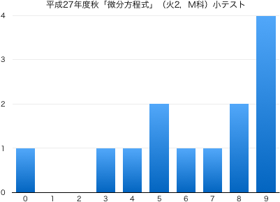
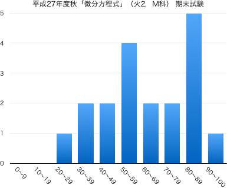

連絡事項
授業の目的
ニュートンが最初に微分方程式を用いて力学的な運動を表わして以来、自然科学の法則や工学における現
象を表現する手段として、微分方程式は重要な役割を果たしている。
専門科目の理解に必要とされる読解力・計算力を身に付けるために、常微分方程式について学習する。基本的な常微分方程式の解法に習熟するとともに、解の意味も認識する。
達成目標
- 変数分離形微分方程式の解を求めることができる。
- 同次形微分方程式の解を求めることができる。
- 1階線形微分方程式の解を求めることができる。
- 完全微分方程式の解を求めることができる。
- 積分因子を理解し、それを利用して微分方程式の解を求めることができる。
- 微分演算子を理解し、それを利用して微分方程式の解を求めることができる。
- 定数係数同次線形微分方程式の解を求めることができる。
- 逆微分演算子を理解し、それを利用して微分方程式の解を求めることができる。
- 定数係数非同次線形微分方程式の解を求めることができる。
科目の位置づけ
-
微分積分学I／微分法（1変数関数の微分） → 微分積分学II／積分法（1変数関数の積分） → 微分方程式
-
微分積分学の基礎として、「微分積分学I／微分法」では1変数関数の微分法を、「微分積分学II／積分法」では1変数関数の積分法を取り扱っている。この科目では、先行する2科目の内容を踏まえて、常微分 方程式の解法を学習する。
- この科目と「微分積分学I/微分法」、「微分積分学II/積分法」を併せて履修 することにより、基本的な常微分方程式の解法を一通り習得することができる。
これまでの授業と今後の予定
| 第1回 |
9月 |
29日（火） |
ガイダンス「微分と積分，微分方程式について」 |
| 第2回 |
10月 |
6日（火） |
微分方程式の解の存在 第1部 第1章 §1, 2 |
| 第3回 |
|
13日（火） |
変数分離形微分方程式 第1部 第2章 §1 |
| 第4回 |
|
20日（火） |
同次形微分方程式 第1部 第2章 §2 |
|
|
23日（金） |
（特別研修日） |
|
|
27日（火） |
（休講） |
| 第5回 |
11月 |
10日（火） |
1階線形微分方程式 第1部 第2章 §3 |
| 第6回 |
|
17日（火） |
ベルヌーイの微分方程式 第1部 第2章 §3 |
| 第7回 |
|
24日（火） |
完全微分方程式 第1部 第2章 §4 |
| 第8回 |
12月 |
1日（火） |
積分因子 第1部 第2章 §4 |
| 第9回 |
|
8日（火） |
高階同次線形微分方程式とその基本解系 第1部 第3章 §1 |
| 第10回 |
|
9日（水） |
（補講）小テスト（6限, 2-273教室）（問題 | 解答 | 得点分布） |
|
|
10日（木） |
（補講）小テスト（6限, 2-273教室） |
| 第11回 |
|
15日（火） |
微分演算子 第1部 第3章 §2 |
| 第12回 |
|
22日（火） |
定数係数同次線形微分方程式 第1部 第3章 §3 |
|
|
23日（水） |
（補講日） |
| 第13回 |
1月 |
12日（火） |
逆演算子 第1部 第3章 §4 |
| 第14回 |
|
19日（火） |
定数係数非同次線形微分方程式 第1部 第3章 §5 |
|
|
26日（火） |
期末試験（問題 | 解答 | 得点分布） （2限 10:40--11:40） |
教科書・参考文献について
- 矢野健太郎・石原繁編 『基礎 解析学』 裳華房 » リンク
評価について
- 期末試験80%，小テスト・演習課題など20%の割合で評価する．
- 毎回の授業で問題演習を実施する．
- 教科書等の問題を指定し，指定の答案用紙に解答して提出してもらいます．
- 解答後は必ず答え合わせをして，正しくない場合は途中式のどこが間違えているか探して訂正してもらいます（正答をただ書き写すことではない）．
- 授業時間内に終わらない場合は，次回の授業の前々日（ただし土日を除く）の17:00までに私に直接手渡すか，研究室のドアの封筒に提出してもらいます．提出期限が過ぎた答案は一切受け取りません．
- 1回の提出につき1点を加点します（合計点数は最大10点）．
ただし，不完全な答案（解答されていない問題がある，答え合わせをしていない，誤答が正されていない，等々の不備）は加点しません．
- 中間期に小テストを実施する（10点）．
- 期末試験を実施する（100点満点）．
- $\min\{10,$(課題提出回数)$\times 1\}+$(中間小テストの点数)$+$(期末試験の点数)$\times 0.8\geqq 60$ で合格とする．
その他
- 授業の欠席について
- 出席点というものがないので，休んだことの届け出は基本的にしなくて結構です．友人にノートを写させてもらうなどの対処を各自行ってください（課題の有無も確認してください）．
- 休んだ回の課題を提出する意思があるならば，メール等で連絡の上，答案用紙を受け取りに来てください（またはここからダウンロードして印刷）．レポート用紙やルーズリーフでの提出は原則不可です．
- 病欠等で数日休んでしまった場合は，課題の提出期限を猶予します．その際は，答案用紙を受け取る際に欠席届け等を見せてください．
- スチューデントアワー (SH) は月火水木の昼休みです．
- 授業に対する基本的な考え方に目を通しておいてください．
試験の得点分布と評価など
- 小テスト：問題と解答（平均点 7.71点）

- 期末試験：問題と解答（平均点 62.7点 /100点）
|  |
| 履修者 | 28 |
| 受験者 | 19 |
| AA | 1 |
| A | 6 |
| B | 1 |
| C | 5 |
| D | 6 |
| 未受験 | 9 |
| 単位修得者 | 13 |
| 単位修得率 | 68.4% |
|